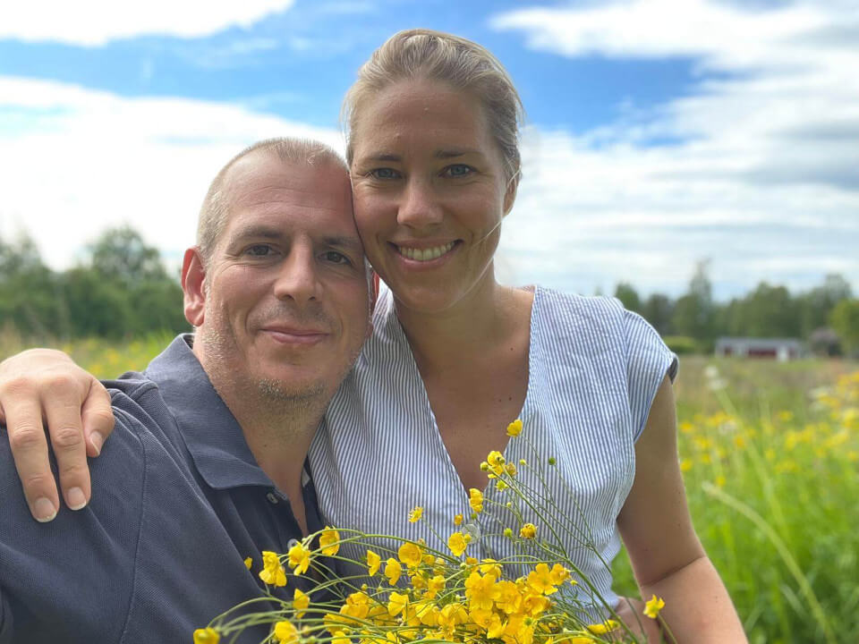
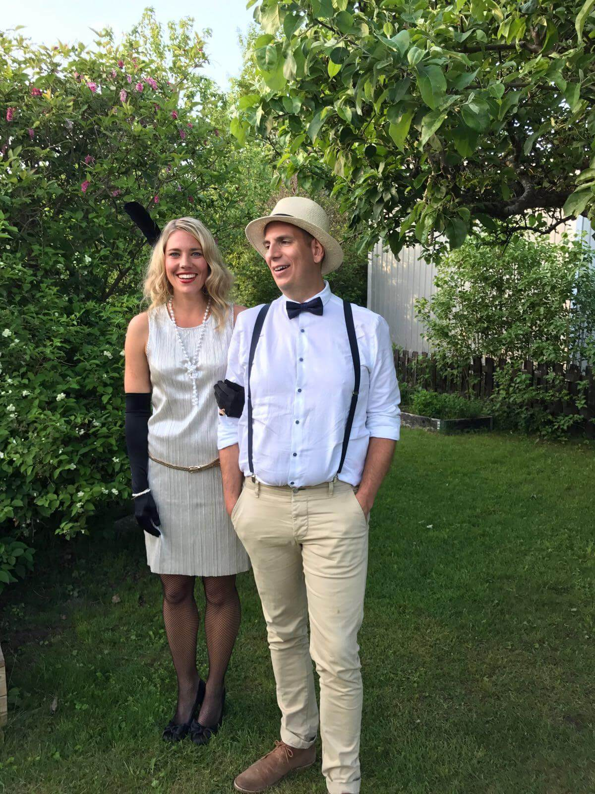
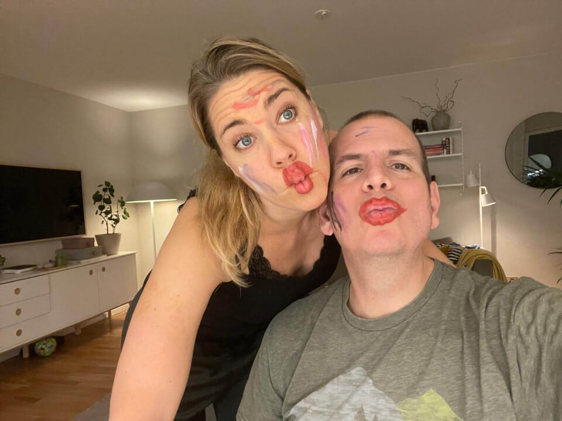
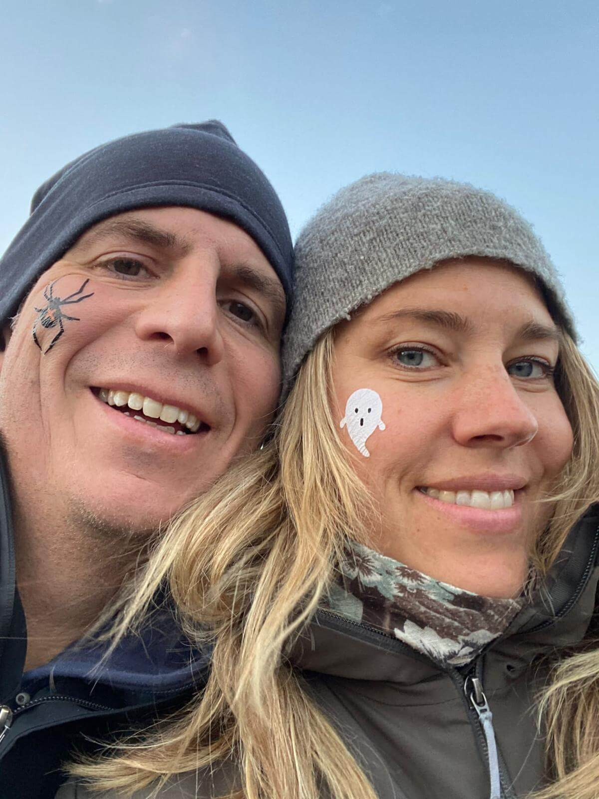

Vi, Cecilia & Jan Paul, gifter oss lördagen den 19 juli 2025 på Sörbyn Lodge.

Det är med stor glädje vi vill bjuda in dig/er att fira vårt bröllop tillsammans med oss!
Vi, Cecilia & Jan Paul, gifter oss lördagen den 19 juli 2025 på Sörbyn Lodge. Det skulle betyda mycket för oss att få dela denna speciella dag med dig/er.
Sörbyn är en underbar plats och vi vill gärna hinna umgås så mycket som möjligt, så vi vill gärna tillbringa hela helgen tillsammans med dig/er.
Därför är vår önskan att fira tillsammans från fredag eftermiddag till söndag lunch. Vår förhoppning är att helgen ska kännas som en minisemester tillsammans med alla våra bästa och finaste vänner och familj.
Självklart går det bra att enbart vara med på ceremoni och fest på lördag eftermiddag/kväll om så önskas.

För er som vill komma redan på fredagen är det drop in i Sörbyn från 16-tiden. Vi checkar in och tar en enklare middag utomhus (om vädret tillåter).
Vi bjuder på maten, gästerna betalar sin egen dryck. Vi bjuder sedan på bastu och lite tilltugg. Om vädret är med oss bastar, badar och umgås vi ett par timmar innan vi gör kväll.
För den som bara vill njuta av en stilla skogspromenad finns vackra omgivningar att strosa omkring i.
Morgon och förmiddag spenderar man på egen hand med långfrukost, kanske ett morgondopp i sjön och soft häng på terrassen. För den som inte vill sitta stilla kommer det finnas möjlighet till någon utomhusaktivitet.
Vi gifter oss nere på bryggan vid vackra Vitträsket. Vigseln sker kl. 15.00 på lördag den 19 juli.
Efter vigseln blir det brudskål och mingel utomhus till ljuva bakgrundstoner.
Vi äter, umgås och dansar från ca kl. 17.30 till dess att benen inte längre bär oss. Vår DJ spelar härlig musik och baren är öppen till självkostnadspris.
På söndagsmorgonen sover vi länge och tar sedan en långfrukost tillsammans. Vi tar det lugnt och njuter av platsen och varandras sällskap. Hem tar man sig på egen hand när man själv önskar.
För er som vill säga något, sjunga en trudelutt eller göra någon annan aktivitet under bröllopsmiddagen (eller annan tidpunkt under helgen) föranmäler du detta till vår toastmaster Jonas på (företrädesvis) e-post jonaswestberg75@gmail.com eller telefon 070-787 30 41.
Passa gärna på att i förväg lägga in dina favoritlåtar i vår gemensamma spellista på Spotify så vår DJ kan få inspiration om vad just du vill höra för musik.
Festfin och somrig under lördagens vigsel, middag och fest.
I övrigt gäller kläder efter väder för att kunna vara utomhus och promenera, bada (om man önskar) och umgås hela helgen.
Vi hoppas att ni tillbringar helgen med oss och bor på Sörbyn Lodge, antingen en eller två nätter, i stället för att ge oss några bröllopspresenter. Att fira tillsammans är det enda vi önskar oss.
Sörbyn Lodge ligger ca 35 km norr om Boden.
Närmaste flygplats är Luleå Airport ca 76 km från Sörbyn Lodge. Med bil tar det ca en timme att köra till Sörbyn. Hyrbil från flygplatsen är att rekommendera för er inresande.
Vi har preliminärbokat alla rum som finns på Sörbyn Lodge och behöver veta vilka av er som sover över en eller två nätter, eller om du inte bor över alls. Boende betalas individuellt av gästerna själva.
Det finns antingen stugor eller hotellrum på området. Samtliga har två enkelsängar och i vissa rum går det att ställa in en extrasäng. Priset är 1900 kr per natt per rum oavsett boendetyp (dvs för två personer) + 475 kr för en extrasäng.
Obs, då det finns begränsat antal stugor och rum behöver vi veta så snart det bara går hur många som vill bo över för att kunna fördela boendet.

Vi älskar era barn men denna helg firar vi utan barn. Spädbarn är självklart välkomna.
OSA senast den 6 april via formuläret nedan.
Vi ser fram emot att fira kärleken och tillbringa en härlig helg tillsammans med dig/er!
Med kärlek,
Cecilia & Jan Paul

För att kunna planera boende, mat med mera, önskar vi veta nedanstående. Fyll i formuläret en gång per person/par.